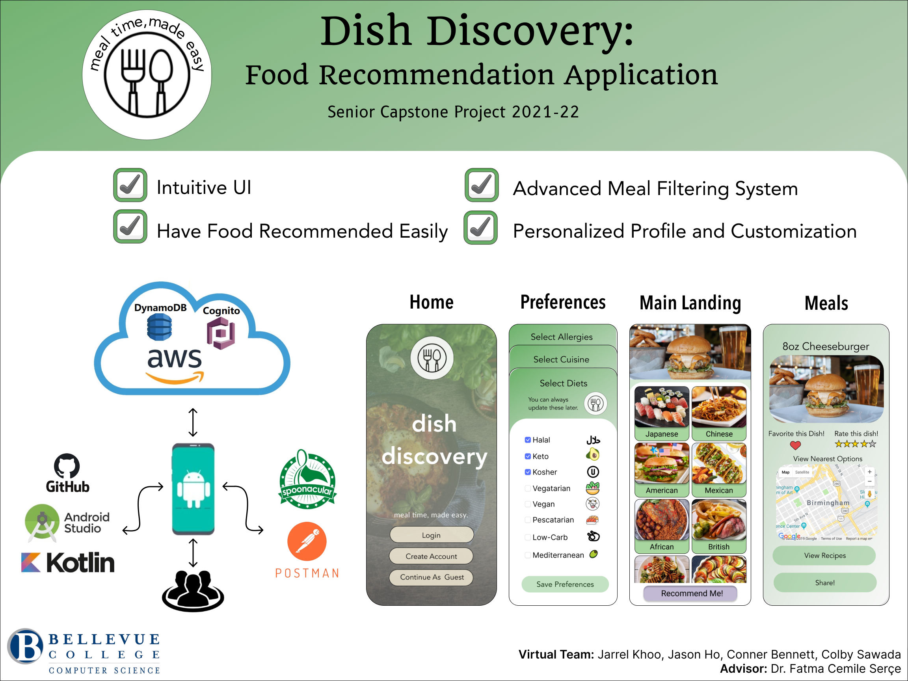

Overview
Dish Discovery helps meal decision making seamless and stress free. You will be able to
browse all sorts of cuisines from around the globe. Be able to set up a personalized
profile with preferences, and be handed food recommendations at the touch of your
fingertips. Find new recipes and explore new meals to create!
Technologies Used
- Android Studio
- Java, Kotlin
- Amazon Web Services (AWS) Cognito, DynamoDB
- Figma
- GitHub
- Retrofit
- Spoonacular API
- Postman
Implementation
-
Beginning phases
Started with completing the initial SRS (Software Requirement Specifications) and SDD (Software Design Document) documents. Also completed a PR FAQ document.
-
Figma Designs
All initial designs were first prototyped in Figma. Any further changes or ideas were also first designed using Figma. The prototypes were then coded using Andriod Studio.
-
Backend implementation
Implemented AWS Cognito, AWS DynamoDB, and Spoonacular API as our backend.
-
Testing
Tested the database by calling it and comparing with expected results. Tested user authentication provided by AWS Cognito. Tested API calls to Spoonacular. New testing was also done throughout all the implementation phases when something was changed or added.
-
More Frontend/Backend
Implemented user personalization, along with recommendation functionality. This was also where we cleaned up the look of the UI.